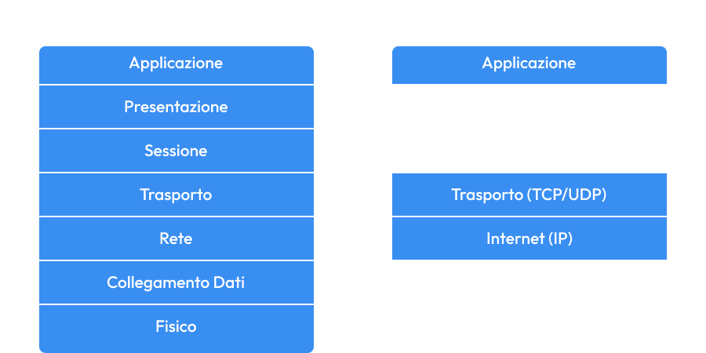

Questo modello, cui venne dato il nome di Internet Protocol Suite, presenta 2 protocolli principali:
-IP(Internet Protocol);
-TCP(Trasmission Control Protocol)
Proprio da tali protocolli deriva il nome TCP/IP che viene usato per identificare questa architettura di rete.
Modello TCP/IP
Quali sono i livelli e come si confrontano con l’ISO/OSI?
Si basa su 4 livelli, a differenza dell’ISO/OSI che ne prevede 7.
1. due livelli in corrispondenza:
a. il livello 3 ISO/OSI Rete con il livello Internet del TCP/IP
b. il livello 4 ISO/OSI Trasporto con il livello Trasporto del TCP/IP: hanno lo stesso nome, ma svolgono funzioni diverse;
2. il livello Internet si “Appoggia” sull’equivalente del livello 2 ISO/OSI, cioè i due livelli più bassi della pila OSI corrispondono a quello che in TCP viene chiamato livello host-rete;
3. in TCP/IP non sono previsti i livelli di prensentazione e sessione: le loro caretterestiche utili devono quindi essere implementate dall’applicazione

 Indietro
Indietro